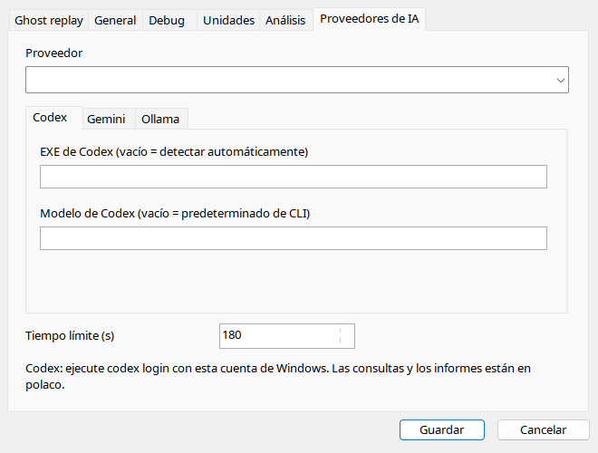
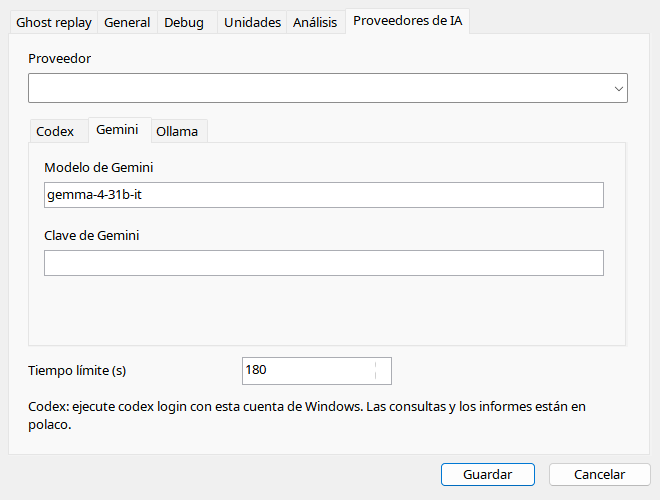
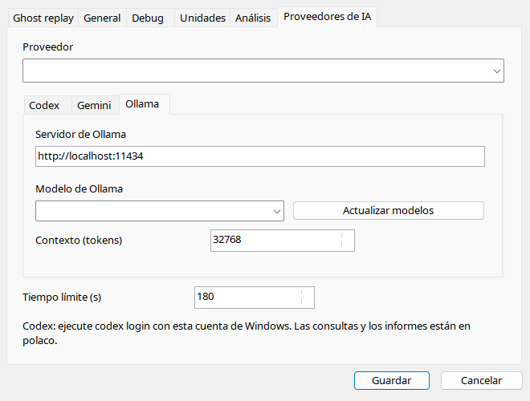

Elija proveedor y pestaña. Codex necesita CLI nativo y autenticación; EXE no es wrapper. Gemini requiere clave/modelo. Ollama requiere servidor accesible con modelo instalado; refrescar no descarga pesos. Timeout limita espera, no necesariamente proceso remoto. No comparta INI personal con claves.
| Opción / acción | Funcionamiento y limitaciones |
|---|---|
| Proveedor | Codex/Gemini/Ollama; editar campos no crea cuentas. |
| Timeout | 1–1800 s, predeterminado 180; deja de esperar, no prueba que la nube no recibió datos. |
| Codex EXE | Vacío detecta codex.exe nativo; no wrappers .cmd/.ps1. Autentique CLI aparte. |
| Modelo Codex | Vacío usa predeterminado CLI; override debe estar disponible. |
| Gemini | Identificador de modelo y clave API; nunca comparta settings.ini personal con clave. |
| Ollama | http://localhost:11434 por defecto; URL de servidor alcanzable, no página de descarga. |
| Modelo / actualizar | Lista modelos instalados; no descarga pesos. |
| Contexto | 2048–262144 tokens, predeterminado 32768; capacidad depende del modelo/configuración/memoria. |
| Idioma | Cada proveedor recibe locale actual en prompt, manteniendo identificadores. |


